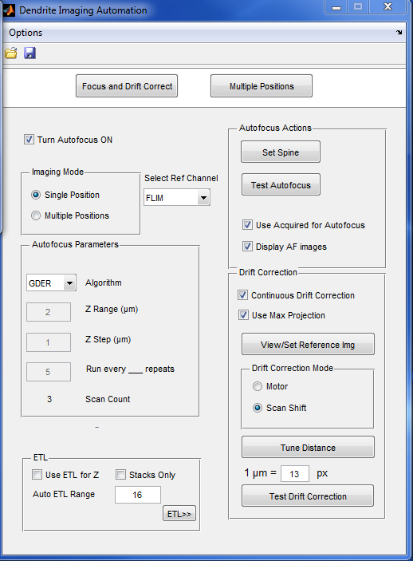
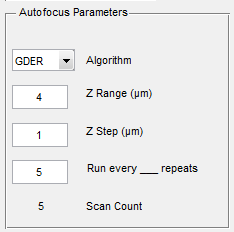

Single Position Imaging
Follow this step-by-step tutorial to image one position over a period of time while incorporating Autofocus and automatic drift correction
Note: the use of Autofocus requires imaging of multiple Z positions. If you image at least 3 Z slices every time, this is sufficient for continuous autofocus ("Use Acquired for Autofocus"). If you prefer to take fewer slices, then an Autofocus routine can be set to run once every few aquisitions, separate from the imaging itself.
- Find your position of interest.
- Turn on the Autofocus, Single Position mode, Continuous Drift Correction, Use Max Projection, Scan Shift, and Display AF images in the Focus and Drift Correct panel of the DIA window:

- In the "Select Ref Channel" dropdown menu, select the primary channel which you will be using for imaging (this channel will be used as a reference for autofocus and drift correction).
- If you're using drift correction, click on View/Set Reference Img. This will collect a reference image to use for determining drift.
- If you'd like Autofocus to work in a specific spot (a dendritic spine, for example), click "Set Spine". Next, click on the area you'd like to use in the Acquisition Channel selected in the Ref Channel. Note: this does not currently work with the FLIM window, so if picking a spine, temporarily select a regular acquisition channel in "Select Ref Channel" to set spine coordinates.
- If you are collecting 3 or more slices each time, select "Use Acquired for Autofocus". If you prefer for a separate Autofocus round to run every few repeats, do not select this options.
- Set the "Autofocus Parameters". If using acquired images for autofocus, you only need to set the algorithm, which should probably be set to GDER by default. If not using acquired images, set the Z range and Z step of the autofocus routine, and select the repeat interval for Autofocus to run. Note: if using FLIM, the separate Autofocus routine will run in Channel 1.

- You're all set! Press LOOP to start. Whenever Autofocus runs, a window will pop up showing the images used for autofocus, the ROI which the autofocus routine used (red square), and the best-focused position (Green Square). The Z value reflects the absolute motor Z position.

Created with the Personal Edition of HelpNDoc: Free help authoring environment